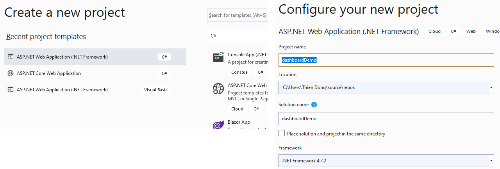
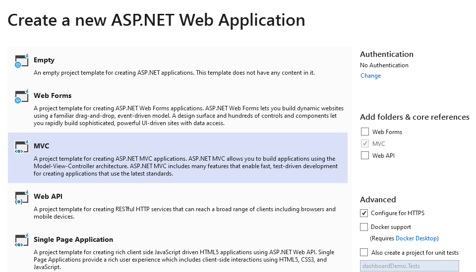
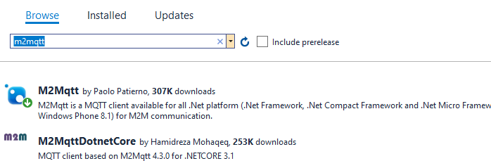
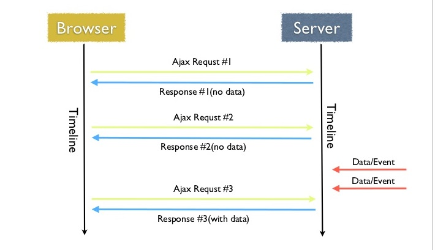
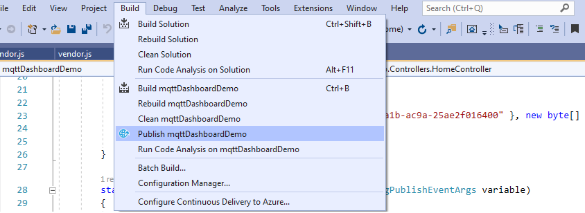

Xây dựng Dashboard giám sát nhiệt độ
Bài này sẽ hướng dẫn tạo một dashboard cơ bản sử dụng C# MVC, lấy dữ liệu từ mqtt
Trước tiên sẽ tìm hiểu về cách xây dựng 1 web server sử dụng mô hình MVC
Tìm hiểu mô hình MVC

MVC là từ viết tắt của ‘Model-View-Controller’. Nó đại diện cho các nhà phát triển kiến trúc áp dụng khi xây dựng các ứng dụng. Với kiến trúc MVC, chúng ta xem xét cấu trúc ứng dụng liên quan đến cách luồng dữ liệu của ứng dụng của chúng ta hoạt động như thế nào.
Chức năng các thành phần
- Model : là nơi chứa những nghiệp vụ tương tác với dữ liệu hoặc hệ quản trị cơ sở dữ liệu (mysql, mssql… ); nó sẽ bao gồm các class/function xử lý nhiều nghiệp vụ như kết nối database, truy vấn dữ liệu, thêm – xóa – sửa dữ liệu…
- View : là nới chứa những giao diện như một nút bấm, khung nhập, menu, hình ảnh… nó đảm nhiệm nhiệm vụ hiển thị dữ liệu và giúp người dùng tương tác với hệ thống.
- Controller : là nới tiếp nhận những yêu cầu xử lý được gửi từ người dùng, nó sẽ gồm những class/ function xử lý nhiều nghiệp vụ logic giúp lấy đúng dữ liệu thông tin cần thiết nhờ các nghiệp vụ lớp Model cung cấp và hiển thị dữ liệu đó ra cho người dùng nhờ lớp View.
Tạo project mvc trong visual studio
Ở đây chúng ta dùng .net framwork trên ngôn ngữ C#
 Tải về gói thư viện mqtt trong Nuget Package
Chúng ta install thư viện m2mqtt để subscribe dữ liệu từ broker
Vào Project->Manager Nuget packages... và tìm gói m2mqtt
Import thư viện m2mqtt vào project
using uPLibrary.Networking.M2Mqtt;
using uPLibrary.Networking.M2Mqtt.Messages;
Khởi tạo client và chạy thử subscribe
MqttClient client = new MqttClient("broker.hivemq.com", 1883, false, MqttSslProtocols.None, null, null);
client.MqttMsgPublishReceived += clientReceivedData;
string clientId = Guid.NewGuid().ToString();
client.Connect(clientId);
client.Subscribe(new string[] { "2cfdddc1-651d-4a1b-ac9a-25ae2f016400" }, new byte[] { MqttMsgBase.QOS_LEVEL_AT_LEAST_ONCE });
Add template vào view
Sử dụng các template dashboard free có sẵn trên mạng, ngoài ra cần sử dụng những template chưa bị tối ưu cũng như chưa bị tối giản trong code javascript để có thể dễ dàng chỉnh sửa
Có thể sử dụng template Sb-admin-2
Sau khi tải template về cần vào thư mục js để kiểm tra code javascript có thể chỉnh sửa được hay không
Hình bên phải mô tả code javascript đã được tối ưu, do ngôn ngữ javascript là ngôn ngữ thông dịch, nên toàn bộ file javascript sẽ được tải lên máy người dùng và thực thi trên trình duyệt web. Vì thế để web chạy nhanh hơn(load nhanh hơn) thì developer cần phải làm nhẹ nhất các file javascript bằng cách làm tinh gọn các biến sử dụng chỉ thành các ký tự. Vì vậy khá khó để sửa đổi code để tùy chỉnh dashboard
Sử dụng ajax để truyền dữ liệu giữa backend - frontend
AJAX là chữ viết tắt của Asynchronous JavaScript and XML. Đơn giản thì ajax giúp cho việc cập nhật dữ liệu từ server -> trình duyệt người dùng thì không cần phải tải lại trang
Gửi ajax đến server
Trong đó
- url: là đường dẫn đến 1 hàm requestData trong HomeController
- type: có 2 loại GET và POST, GET dùng để lấy dữ liệu hoặc POST dùng để gửi dữ liệu lên server
- data: dữ liệu gửi lên server(chỉ có đối với POST)
- success-error: là 2 hàm callback nhưng chỉ duy nhất 1 hàm được thực hiện, được gọi khi nhận trả về từ server(sẽ gọi callback success) hoặc lỗi/timeout(sẽ gọi callback error). Ở hàm callback có thể gán một function đã tạo(như error) hoặc có thể gán một function mới(như success)
$.ajax({
url: "/Home/requestData",
type: "POST",
data: JSON.stringify(objTest),
success: function (result) {
},
error: errorProcess(errorResult)
});
Server tiếp nhận gói tin ajax và phản hồi
Trong HomeController tạo function tương ứng với url đã tạo trong ajax, dữ liệu truyền vào là dữ liệu từ frontend gửi đến controller.
Cuối cùng sau khi xử lý dữ liệu sẽ return dữ liệu về phía frontend
public JsonResult requestData(String temp)
{
String result = "{\"Value\": \"" + sensorValueStr + "\"}";
return Json(result, JsonRequestBehavior.AllowGet);
}
Cập nhật chart

Thư viện chart sử dụng canvas để render nên khi thay đổi nội dung trên chart cần phải vẽ lại hết toàn bộ
Ở backend sẽ gửi result là chuỗi json kèm key là "Value" để chứa giá trị hiện tại cần cập nhật lên chart, vì thế bước đầu tiên sẽ chuyển json -> key-value và đẩy dữ liệu đó vào mảng dữ liệu dataChart
Tùy theo chart có cần lưu giá trị cũ hay chỉ cần chạy real-time thì ta có thể giới hạn số lượng trên mảng dữ liệu
Ngoài ra các thư viện chart thông dụng thường hay kèm các hiệu ứng khi render chỉ phù hợp với các chart cố định, không thay đổi dữ liệu. Vì thế cần phải disable animation trong chart đi
$.ajax({
url: "/Home/requestData",
type: "POST",
data: JSON.stringify(objTest),
success: function (result) {
valueJson = JSON.parse(result);
value = parseInt(valueJson['Value']);
dataChart.push(value);
if (dataChart.length > 20) {
dataChart.shift();
}
var ctx = document.getElementById('my-chart').getContext('2d');
var myChart = new Chart(ctx, {
type: 'line',
animation: false,
data: {
labels: ['M', 'T', 'W', 'T', 'F', 'S', 'S', 'M', 'T', 'W', 'T', 'F', 'S', 'S', 'M', 'T', 'W', 'T', 'F', 'S'],
datasets: [{
label: 'apples',
data: dataChart,
backgroundColor: "rgba(153,255,51,0.6)"
}]
},
options: {
animation: {
duration: 0
}
}
});
},
error: function (result) {
console.log(result);
}
});
Đưa dự án lên web server
DashboardPublish project c#
Chọn vào publish project cần đưa lên server, sau đó nén toàn bộ file thành định dạng .zip
Đưa file publish lên server
Vào bảng điều khiển của hosting(nếu lập trình .net thì cần sử dụng hosting window), vào Files và trong mục Home directory chọn vào httpdocs. Upload file zip đã nén ở trên lên và giải nén ra và hoàn tất việc đưa project lên web server